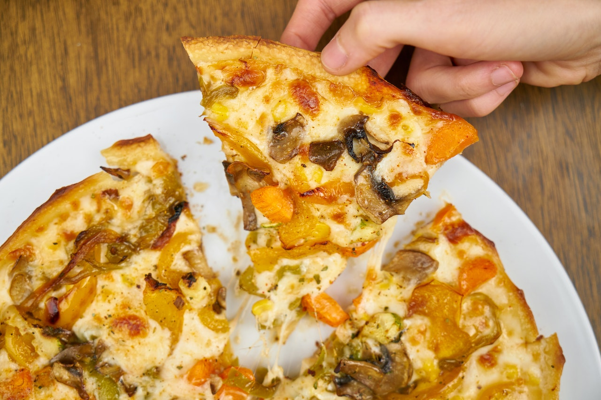

Homemade Pizza

Description
Make perfect pizza at home with this classic homemade pizza recipe, including a pizza dough recipe, topping suggestions, and step-by-step instructions with photos.
Ingredients
For dough
- 1 1/2 cups (355ml) warm water (105F-115F)
- 2 1/4 tsp. active dry yeast
- 3 3/4 cups (490g) bread flour
- 2 tsp. extra virgin olive oil(omit if cooking pizza in a wood-fired pizza oven)
- 2 tsp. kosher salt
- 1 tsp. sugar
For toppings
- Extra virgin olive oil
- Cornmeal (to help slide the pizza onto the pizza stone)
- Tomato sauce (smooth or pureed)
- Firm mozzarella cheese, grated
- Fresh soft mozzarella cheese, separated into small clumps
- Fontina cheese, grated
- Parmesan cheese, grated
- Feta cheese, crumbled
- Mushrooms, very thinly sliced if raw, otherwise first sautéed
- Bell peppers, stems and seeds removed, very thinly sliced
- Italian pepperoni, thinly sliced
- Italian sausage, cooked ahead and crumbled
- Sliced black olives
- Chopped fresh basil
- Baby arugula, tossed in a little olive oil, added as pizza comes out of the oven
- Pesto
- Pepperoni, thinly sliced
- Onions, thinly sliced raw or caramelized
- Ham, thinly sliced
Steps
Making Pizza Dough
- Proof the yeast.
- Make and knead the pizza dough
- Let the dough rise
Prepping the Pizza
- Preheat the pizza stone (or pizza pan or baking sheet)
- Divide the dough into 2 balls
- Prep the toppings
- Flatten the dough ball, and stretch out into a round
- Brush the dough top with olive oil
- Sprinkle the pizza peel with cornmeal, put flattened dough on top
- Spread with tomato sauce and sprinkle with toppings
- Slide pizza into the oven
- Bake
Homepage